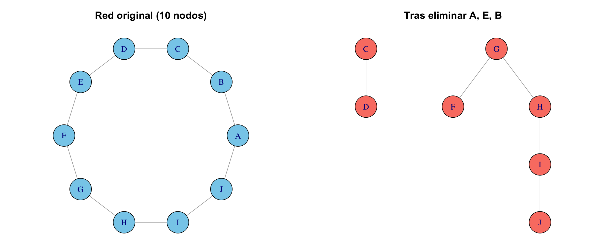
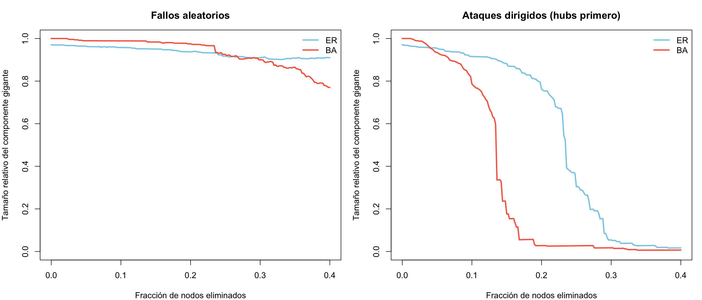
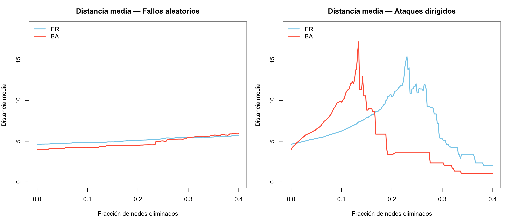
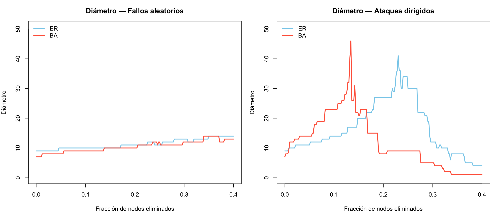
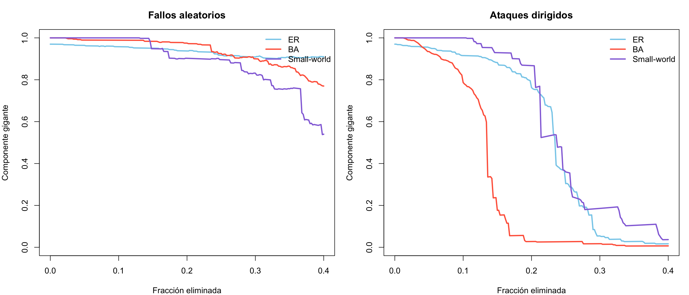

flowchart TD
A[Robustez de redes] --> B[Fallos aleatorios]
A --> C[Ataques dirigidos]
A --> D[Métricas de impacto]
B --> B1[Eliminar nodos al azar]
C --> C1[Eliminar hubs primero]
D --> D1[Componente gigante]
D --> D2[Distancia media]
D --> D3[Diámetro]
A --> E[Comparar topologías]
E --> E1[ER: robusto a ambos]
E --> E2[BA: robusto a fallos, frágil a ataques]
Robustez de redes
🎯 Objetivos de aprendizaje
Al finalizar este capítulo serás capaz de:
- Definir robustez de una red y distinguir entre fallos aleatorios y ataques dirigidos.
- Implementar simulaciones de eliminación de nodos (aleatoria y por grado) en
igraph. - Medir el impacto de la eliminación usando métricas: distancia media, diámetro, tamaño del componente gigante.
- Comparar la robustez de distintos modelos de red (ER, BA, small-world).
- Explicar por qué las redes scale-free son robustas ante fallos pero vulnerables ante ataques.
Pregunta motivadora: Internet está formada por miles de millones de dispositivos conectados. Cada día fallan servidores, se cortan cables, se caen routers… y sin embargo, la red sigue funcionando. ¿Cómo es posible? ¿Y qué pasaría si en vez de fallos aleatorios, alguien atacara deliberadamente los nodos más importantes?
Preparación del entorno
library(igraph)
Attaching package: 'igraph'The following objects are masked from 'package:stats':
decompose, spectrumThe following object is masked from 'package:base':
union¿Qué significa que una red sea robusta?
Una red es robusta si puede seguir funcionando (manteniendo la comunicación entre sus nodos) incluso cuando parte de ella falla. La robustez depende de dos factores:
- El tipo de perturbación: ¿Los nodos fallan al azar o alguien los elige deliberadamente?
- La estructura de la red: ¿Tiene hubs? ¿Es homogénea? ¿Qué tan redundantes son sus caminos?
💡 Concepto clave
Distinguimos dos escenarios fundamentales:
- Fallo aleatorio (random failure): los nodos se eliminan al azar, sin importar su importancia. Modela fallos técnicos, apagones o enfermedades aleatorias.
- Ataque dirigido (targeted attack): se eliminan deliberadamente los nodos más conectados (hubs). Modela ataques cibernéticos, sabotaje o intervenciones estratégicas.
La respuesta de la red a cada escenario puede ser radicalmente diferente [@albert2000].
Herramienta fundamental: delete_vertices()
Antes de simular fallos y ataques, necesitamos dominar la eliminación de nodos en igraph.
# Crear red anillo con nombres
g <- make_ring(10)
V(g)$name <- LETTERS[1:10]
par(mfrow = c(1, 2), mar = c(1, 1, 3, 1))
lay <- layout_in_circle(g)
plot(g, layout = lay,
vertex.color = "skyblue", vertex.size = 25,
main = "Red original (10 nodos)")
# Eliminar nodos A, E y B
g2 <- delete_vertices(g, c("A", "E", "B"))
plot(g2,
vertex.color = "salmon", vertex.size = 25,
main = "Tras eliminar A, E, B")
cat("=== Red original ===\n")=== Red original ===cat("Nodos:", vcount(g), " | Aristas:", ecount(g), "\n")Nodos: 10 | Aristas: 10 cat("Componentes:", components(g)$no, "\n")Componentes: 1 cat("Distancia media:", round(mean_distance(g), 3), "\n\n")Distancia media: 2.778 cat("=== Tras eliminar A, E, B ===\n")=== Tras eliminar A, E, B ===cat("Nodos:", vcount(g2), " | Aristas:", ecount(g2), "\n")Nodos: 7 | Aristas: 5 cat("Componentes:", components(g2)$no, "\n")Componentes: 2 cat("Distancia media:", round(mean_distance(g2), 3), "\n")Distancia media: 1.909
⚠️ Error frecuente
Después de delete_vertices(), los índices de los nodos cambian. Si eliminas el nodo 1, el que antes era nodo 2 ahora es nodo 1. Por eso es preferible trabajar con nombres (V(g)$name) en vez de índices numéricos cuando eliminas nodos iterativamente.
El componente gigante
Cuando eliminamos nodos, la red puede fragmentarse en componentes desconectados. El componente gigante es el componente conectado más grande. Su tamaño relativo (como fracción del total de nodos restantes) es la métrica principal de robustez:
\[ S = \frac{|C_{\max}|}{n_{\text{restantes}}} \]
Si \(S \approx 1\), la red sigue funcionando. Si \(S \ll 1\), la red se fragmentó.
# Función auxiliar: tamaño relativo del componente gigante
tamano_gigante <- function(g) {
comp <- components(g)
max(comp$csize) / vcount(g)
}
cat("Componente gigante (original):", tamano_gigante(g), "\n")Componente gigante (original): 1 cat("Componente gigante (tras eliminar 3 nodos):",
round(tamano_gigante(g2), 3), "\n")Componente gigante (tras eliminar 3 nodos): 0.714 Simulación de fallos aleatorios
Vamos a construir una función que elimine nodos al azar de forma iterativa y registre las métricas en cada paso.
simular_fallos <- function(g, fraccion_eliminar = 0.5, semilla = 42) {
set.seed(semilla)
n_original <- vcount(g)
n_eliminar <- floor(n_original * fraccion_eliminar)
# Seleccionar nodos a eliminar en orden aleatorio
orden_eliminacion <- sample(V(g)$name, n_eliminar)
# Registrar métricas en cada paso
resultados <- data.frame(
eliminados = 0:n_eliminar,
fraccion_eliminada = (0:n_eliminar) / n_original,
comp_gigante = numeric(n_eliminar + 1),
dist_media = numeric(n_eliminar + 1),
diametro = numeric(n_eliminar + 1)
)
g_temp <- g
for (i in 0:n_eliminar) {
if (i > 0) {
g_temp <- delete_vertices(g_temp, orden_eliminacion[i])
}
resultados$comp_gigante[i + 1] <- tamano_gigante(g_temp)
# Calcular distancia media solo en el componente gigante
comp <- components(g_temp)
giant_id <- which.max(comp$csize)
giant_nodes <- which(comp$membership == giant_id)
if (length(giant_nodes) > 1) {
g_giant <- induced_subgraph(g_temp, giant_nodes)
resultados$dist_media[i + 1] <- mean_distance(g_giant)
resultados$diametro[i + 1] <- diameter(g_giant)
} else {
resultados$dist_media[i + 1] <- 0
resultados$diametro[i + 1] <- 0
}
}
resultados
}En un ataque dirigido, eliminamos los nodos más conectados primero. Recalculamos el grado después de cada eliminación, porque el nodo más conectado puede cambiar.
simular_ataques <- function(g, fraccion_eliminar = 0.5, semilla = 42) {
set.seed(semilla)
n_original <- vcount(g)
n_eliminar <- floor(n_original * fraccion_eliminar)
resultados <- data.frame(
eliminados = 0:n_eliminar,
fraccion_eliminada = (0:n_eliminar) / n_original,
comp_gigante = numeric(n_eliminar + 1),
dist_media = numeric(n_eliminar + 1),
diametro = numeric(n_eliminar + 1)
)
g_temp <- g
for (i in 0:n_eliminar) {
if (i > 0) {
# Identificar el nodo con mayor grado (recalculado)
deg <- degree(g_temp)
hub <- V(g_temp)$name[which.max(deg)]
g_temp <- delete_vertices(g_temp, hub)
}
resultados$comp_gigante[i + 1] <- tamano_gigante(g_temp)
# Calcular distancia media solo en el componente gigante
comp <- components(g_temp)
giant_id <- which.max(comp$csize)
giant_nodes <- which(comp$membership == giant_id)
if (length(giant_nodes) > 1) {
g_giant <- induced_subgraph(g_temp, giant_nodes)
resultados$dist_media[i + 1] <- mean_distance(g_giant)
resultados$diametro[i + 1] <- diameter(g_giant)
} else {
resultados$dist_media[i + 1] <- 0
resultados$diametro[i + 1] <- 0
}
}
resultados
}
🔑 Recuerda
En la simulación de ataques, es crucial recalcular el grado en cada paso. Después de eliminar un hub, otro nodo puede convertirse en el nuevo más conectado. Esto hace que la simulación sea más lenta pero realista.
Experimento: ER vs. BA bajo fallos y ataques
Ahora viene el experimento central del capítulo. Generaremos una red Erdős–Rényi y una Barabási–Albert de tamaño similar, y las someteremos a ambos tipos de perturbación.
set.seed(123)
n <- 500
# Red ER con ~1000 aristas
g_er <- sample_gnp(n, p = 2 / (n - 1) * 2)
V(g_er)$name <- paste0("ER_", 1:vcount(g_er))
# Red BA con parámetro m = 2 (~1000 aristas)
g_ba <- sample_pa(n, m = 2, directed = FALSE)
V(g_ba)$name <- paste0("BA_", 1:vcount(g_ba))
cat("=== Red Erdős–Rényi ===\n")=== Red Erdős–Rényi ===cat("Nodos:", vcount(g_er), " | Aristas:", ecount(g_er), "\n")Nodos: 500 | Aristas: 965 cat("Grado medio:", round(mean(degree(g_er)), 2), "\n")Grado medio: 3.86 cat("Grado máximo:", max(degree(g_er)), "\n\n")Grado máximo: 10 cat("=== Red Barabási–Albert ===\n")=== Red Barabási–Albert ===cat("Nodos:", vcount(g_ba), " | Aristas:", ecount(g_ba), "\n")Nodos: 500 | Aristas: 997 cat("Grado medio:", round(mean(degree(g_ba)), 2), "\n")Grado medio: 3.99 cat("Grado máximo:", max(degree(g_ba)), "\n")Grado máximo: 54 # Simular los 4 escenarios
fallo_er <- simular_fallos(g_er, fraccion_eliminar = 0.4)
fallo_ba <- simular_fallos(g_ba, fraccion_eliminar = 0.4)
ataque_er <- simular_ataques(g_er, fraccion_eliminar = 0.4)
ataque_ba <- simular_ataques(g_ba, fraccion_eliminar = 0.4)Resultado 1: Componente gigante
par(mfrow = c(1, 2), mar = c(4, 4, 3, 1))
# Fallos aleatorios
plot(fallo_er$fraccion_eliminada, fallo_er$comp_gigante,
type = "l", lwd = 2.5, col = "skyblue",
xlab = "Fracción de nodos eliminados",
ylab = "Tamaño relativo del componente gigante",
main = "Fallos aleatorios",
ylim = c(0, 1))
lines(fallo_ba$fraccion_eliminada, fallo_ba$comp_gigante,
lwd = 2.5, col = "tomato")
legend("topright", legend = c("ER", "BA"),
col = c("skyblue", "tomato"), lwd = 2.5, bty = "n")
# Ataques dirigidos
plot(ataque_er$fraccion_eliminada, ataque_er$comp_gigante,
type = "l", lwd = 2.5, col = "skyblue",
xlab = "Fracción de nodos eliminados",
ylab = "Tamaño relativo del componente gigante",
main = "Ataques dirigidos (hubs primero)",
ylim = c(0, 1))
lines(ataque_ba$fraccion_eliminada, ataque_ba$comp_gigante,
lwd = 2.5, col = "tomato")
legend("topright", legend = c("ER", "BA"),
col = c("skyblue", "tomato"), lwd = 2.5, bty = "n")
💡 Concepto clave
Este es el resultado más famoso de la robustez de redes [@albert2000]:
- Ante fallos aleatorios, la red BA es más robusta que la ER: como la mayoría de sus nodos tienen grado bajo, es improbable que un fallo aleatorio afecte un hub.
- Ante ataques dirigidos, la red BA es extremadamente vulnerable: eliminar unos pocos hubs destruye la conectividad global. La red ER, sin hubs, resiste mejor.
Esta dualidad se conoce como la paradoja de la robustez-fragilidad de las redes scale-free.
Resultado 2: Distancia media
par(mfrow = c(1, 2), mar = c(4, 4, 3, 1))
# Calcular ylim seguro para distancias
all_dist <- c(fallo_er$dist_media, fallo_ba$dist_media,
ataque_er$dist_media, ataque_ba$dist_media)
ylim_max <- max(all_dist, na.rm = TRUE)
if (!is.finite(ylim_max) || ylim_max == 0) ylim_max <- 10
ylim_dist <- c(0, ylim_max * 1.1)
# Fallos
plot(fallo_er$fraccion_eliminada, fallo_er$dist_media,
type = "l", lwd = 2.5, col = "skyblue",
xlab = "Fracción de nodos eliminados",
ylab = "Distancia media",
main = "Distancia media — Fallos aleatorios",
ylim = ylim_dist)
lines(fallo_ba$fraccion_eliminada, fallo_ba$dist_media,
lwd = 2.5, col = "tomato")
legend("topleft", legend = c("ER", "BA"),
col = c("skyblue", "tomato"), lwd = 2.5, bty = "n")
# Ataques
plot(ataque_er$fraccion_eliminada, ataque_er$dist_media,
type = "l", lwd = 2.5, col = "skyblue",
xlab = "Fracción de nodos eliminados",
ylab = "Distancia media",
main = "Distancia media — Ataques dirigidos",
ylim = ylim_dist)
lines(ataque_ba$fraccion_eliminada, ataque_ba$dist_media,
lwd = 2.5, col = "tomato")
legend("topleft", legend = c("ER", "BA"),
col = c("skyblue", "tomato"), lwd = 2.5, bty = "n")
Resultado 3: Diámetro
par(mfrow = c(1, 2), mar = c(4, 4, 3, 1))
# Calcular ylim seguro para diámetro
all_diam <- c(fallo_er$diametro, fallo_ba$diametro,
ataque_er$diametro, ataque_ba$diametro)
ylim_max_d <- max(all_diam, na.rm = TRUE)
if (!is.finite(ylim_max_d) || ylim_max_d == 0) ylim_max_d <- 10
ylim_diam <- c(0, ylim_max_d * 1.1)
# Fallos
plot(fallo_er$fraccion_eliminada, fallo_er$diametro,
type = "l", lwd = 2.5, col = "skyblue",
xlab = "Fracción de nodos eliminados",
ylab = "Diámetro",
main = "Diámetro — Fallos aleatorios",
ylim = ylim_diam)
lines(fallo_ba$fraccion_eliminada, fallo_ba$diametro,
lwd = 2.5, col = "tomato")
legend("topleft", legend = c("ER", "BA"),
col = c("skyblue", "tomato"), lwd = 2.5, bty = "n")
# Ataques
plot(ataque_er$fraccion_eliminada, ataque_er$diametro,
type = "l", lwd = 2.5, col = "skyblue",
xlab = "Fracción de nodos eliminados",
ylab = "Diámetro",
main = "Diámetro — Ataques dirigidos",
ylim = ylim_diam)
lines(ataque_ba$fraccion_eliminada, ataque_ba$diametro,
lwd = 2.5, col = "tomato")
legend("topleft", legend = c("ER", "BA"),
col = c("skyblue", "tomato"), lwd = 2.5, bty = "n")
Incluyendo la red Small-World
Agreguemos una tercera topología para tener una comparación más completa:
set.seed(123)
g_sw <- sample_smallworld(1, n, nei = 2, p = 0.05)
V(g_sw)$name <- paste0("SW_", 1:vcount(g_sw))
cat("=== Red Small-World ===\n")=== Red Small-World ===cat("Nodos:", vcount(g_sw), " | Aristas:", ecount(g_sw), "\n")Nodos: 500 | Aristas: 1000 cat("Grado medio:", round(mean(degree(g_sw)), 2), "\n")Grado medio: 4 cat("Grado máximo:", max(degree(g_sw)), "\n")Grado máximo: 7 fallo_sw <- simular_fallos(g_sw, fraccion_eliminar = 0.4)
ataque_sw <- simular_ataques(g_sw, fraccion_eliminar = 0.4)par(mfrow = c(1, 2), mar = c(4, 4, 3, 1))
# Fallos
plot(fallo_er$fraccion_eliminada, fallo_er$comp_gigante,
type = "l", lwd = 2.5, col = "skyblue",
xlab = "Fracción eliminada", ylab = "Componente gigante",
main = "Fallos aleatorios", ylim = c(0, 1))
lines(fallo_ba$fraccion_eliminada, fallo_ba$comp_gigante,
lwd = 2.5, col = "tomato")
lines(fallo_sw$fraccion_eliminada, fallo_sw$comp_gigante,
lwd = 2.5, col = "mediumpurple")
legend("topright", legend = c("ER", "BA", "Small-world"),
col = c("skyblue", "tomato", "mediumpurple"), lwd = 2.5, bty = "n")
# Ataques
plot(ataque_er$fraccion_eliminada, ataque_er$comp_gigante,
type = "l", lwd = 2.5, col = "skyblue",
xlab = "Fracción eliminada", ylab = "Componente gigante",
main = "Ataques dirigidos", ylim = c(0, 1))
lines(ataque_ba$fraccion_eliminada, ataque_ba$comp_gigante,
lwd = 2.5, col = "tomato")
lines(ataque_sw$fraccion_eliminada, ataque_sw$comp_gigante,
lwd = 2.5, col = "mediumpurple")
legend("topright", legend = c("ER", "BA", "Small-world"),
col = c("skyblue", "tomato", "mediumpurple"), lwd = 2.5, bty = "n")
Tabla resumen de robustez
# Fracción de nodos que se deben eliminar para que el comp. gigante baje del 50%
umbral_fragmentacion <- function(resultados, umbral = 0.5) {
idx <- which(resultados$comp_gigante < umbral)
if (length(idx) == 0) return("> 40%")
paste0(round(resultados$fraccion_eliminada[min(idx)] * 100, 1), "%")
}
resumen_rob <- data.frame(
Red = c("Erdős–Rényi", "Barabási–Albert", "Small-world"),
Fallo_50 = c(
umbral_fragmentacion(fallo_er),
umbral_fragmentacion(fallo_ba),
umbral_fragmentacion(fallo_sw)
),
Ataque_50 = c(
umbral_fragmentacion(ataque_er),
umbral_fragmentacion(ataque_ba),
umbral_fragmentacion(ataque_sw)
)
)
knitr::kable(resumen_rob,
caption = "Fracción de nodos a eliminar para fragmentar la red (comp. gigante < 50%)",
col.names = c("Red", "Fallos aleatorios", "Ataques dirigidos"))| Red | Fallos aleatorios | Ataques dirigidos |
|---|---|---|
| Erdős–Rényi | > 40% | 23.6% |
| Barabási–Albert | > 40% | 13.6% |
| Small-world | > 40% | 23.8% |
Visualización del proceso de fragmentación
Veamos cómo luce la red BA antes, durante y después de un ataque dirigido:
set.seed(42)
g_vis <- sample_pa(100, m = 2, directed = FALSE)
V(g_vis)$name <- paste0("v", 1:100)
# Layout fijo
lay_vis <- layout_with_fr(g_vis)
par(mfrow = c(1, 3), mar = c(1, 1, 3, 1))
# Estado original
V(g_vis)$color <- "skyblue"
V(g_vis)$size <- degree(g_vis) * 0.8 + 3
plot(g_vis, layout = lay_vis, vertex.label = NA,
edge.color = adjustcolor("gray50", 0.4),
main = paste0("Original\n(", vcount(g_vis), " nodos, ",
components(g_vis)$no, " comp.)"))
# Eliminar los 5 hubs más conectados
g_vis2 <- g_vis
for (j in 1:5) {
hub <- V(g_vis2)$name[which.max(degree(g_vis2))]
g_vis2 <- delete_vertices(g_vis2, hub)
}
plot(g_vis2, vertex.label = NA,
vertex.size = degree(g_vis2) * 0.8 + 3,
vertex.color = "gold",
edge.color = adjustcolor("gray50", 0.4),
main = paste0("Tras 5 ataques\n(", vcount(g_vis2), " nodos, ",
components(g_vis2)$no, " comp.)"))
# Eliminar 5 hubs más (10 total)
for (j in 1:5) {
hub <- V(g_vis2)$name[which.max(degree(g_vis2))]
g_vis2 <- delete_vertices(g_vis2, hub)
}
plot(g_vis2, vertex.label = NA,
vertex.size = degree(g_vis2) * 0.8 + 3,
vertex.color = "tomato",
edge.color = adjustcolor("gray50", 0.4),
main = paste0("Tras 10 ataques\n(", vcount(g_vis2), " nodos, ",
components(g_vis2)$no, " comp.)"))
Múltiples realizaciones: promediar la incertidumbre
Una sola simulación puede dar resultados atípicos. Para tener conclusiones robustas, repetimos el experimento múltiples veces y promediamos.
set.seed(42)
n_reps <- 10
n_red <- 200
fraccion <- 0.5
n_elim <- floor(n_red * fraccion)
# Matriz para almacenar resultados
resultados_mat <- matrix(NA, nrow = n_elim + 1, ncol = n_reps)
for (r in 1:n_reps) {
g_rep <- sample_pa(n_red, m = 2, directed = FALSE)
V(g_rep)$name <- paste0("v", 1:vcount(g_rep))
# Orden aleatorio de eliminación
orden <- sample(V(g_rep)$name, n_elim)
g_temp <- g_rep
resultados_mat[1, r] <- tamano_gigante(g_temp)
for (i in 1:n_elim) {
g_temp <- delete_vertices(g_temp, orden[i])
resultados_mat[i + 1, r] <- tamano_gigante(g_temp)
}
}
# Calcular media y banda
frac_x <- (0:n_elim) / n_red
media <- rowMeans(resultados_mat)
desv <- apply(resultados_mat, 1, sd)
plot(frac_x, media,
type = "l", lwd = 3, col = "tomato",
xlab = "Fracción de nodos eliminados",
ylab = "Componente gigante (media ± 1 DE)",
main = paste("Fallos aleatorios — Red BA (n=200),", n_reps, "realizaciones"),
ylim = c(0, 1))
# Banda de ± 1 desviación estándar
polygon(c(frac_x, rev(frac_x)),
c(media + desv, rev(media - desv)),
col = adjustcolor("tomato", 0.2), border = NA)
lines(frac_x, media, lwd = 3, col = "tomato")
legend("topright",
legend = c("Media", "± 1 DE"),
col = c("tomato", adjustcolor("tomato", 0.3)),
lwd = c(3, 10), bty = "n")
💡 Concepto clave
La banda de variabilidad (sombreada) muestra cuánto varían los resultados entre realizaciones. Si la banda es estrecha, el resultado es robusto y reproducible. Siempre que hagas simulaciones estocásticas, reporta la variabilidad, no solo la media.
Ejercicios
Ejercicios resueltos
Ejercicio resuelto 1: Genera las siguientes cuatro redes. Para cada una, elimina aleatoriamente 1/100 de sus nodos 10 veces consecutivas. En cada paso, calcula la distancia media y el diámetro. Presenta los resultados en una tabla.
g100: Barabási–Albert con 100 nodosg1K: Barabási–Albert con 1000 nodosg_er: Erdős–Rényi con 1000 nodos y \(p = 0.20\)g_sw: Small-world con 1000 nodos,nei = 3, \(p = 0.2\)
📝 Solución
Paso 1: Crear las redes.
set.seed(42)
redes_ej <- list(
BA_100 = sample_pa(100, directed = FALSE),
BA_1000 = sample_pa(1000, directed = FALSE),
ER_1000 = sample_gnp(1000, 0.20),
SW_1000 = sample_smallworld(1, 1000, nei = 3, p = 0.2)
)
# Asignar nombres a los nodos
for (nombre in names(redes_ej)) {
V(redes_ej[[nombre]])$name <- paste0("n", 1:vcount(redes_ej[[nombre]]))
}Paso 2: Simular eliminación de 1/100 de los nodos, 10 veces consecutivas.
resultados_ej1 <- list()
for (nombre in names(redes_ej)) {
g <- redes_ej[[nombre]]
n <- vcount(g)
n_elim_paso <- max(1, floor(n / 100)) # 1/100 de los nodos
registros <- data.frame(
paso = 0:10,
nodos_restantes = numeric(11),
dist_media = numeric(11),
diametro = numeric(11)
)
g_temp <- g
for (paso in 0:10) {
if (paso > 0) {
# Eliminar 1/100 nodos al azar
n_actual <- vcount(g_temp)
n_quitar <- min(n_elim_paso, n_actual - 1)
victimas <- sample(V(g_temp)$name, n_quitar)
g_temp <- delete_vertices(g_temp, victimas)
}
registros$nodos_restantes[paso + 1] <- vcount(g_temp)
registros$dist_media[paso + 1] <- round(mean_distance(g_temp), 3)
registros$diametro[paso + 1] <- diameter(g_temp)
}
resultados_ej1[[nombre]] <- registros
}Paso 3: Mostrar la tabla resumen (valores finales tras 10 rondas).
resumen_final <- data.frame(
Red = names(redes_ej),
N_original = sapply(redes_ej, vcount),
N_final = sapply(resultados_ej1, function(r) r$nodos_restantes[11]),
Dist_media_inicio = sapply(resultados_ej1, function(r) r$dist_media[1]),
Dist_media_final = sapply(resultados_ej1, function(r) r$dist_media[11]),
Diámetro_inicio = sapply(resultados_ej1, function(r) r$diametro[1]),
Diámetro_final = sapply(resultados_ej1, function(r) r$diametro[11])
)
knitr::kable(resumen_final,
caption = "Efecto de eliminar 1/100 nodos aleatorios en 10 rondas",
col.names = c("Red", "N original", "N final",
"Dist. media (inicio)", "Dist. media (final)",
"Diámetro (inicio)", "Diámetro (final)"))| Red | N original | N final | Dist. media (inicio) | Dist. media (final) | Diámetro (inicio) | Diámetro (final) | |
|---|---|---|---|---|---|---|---|
| BA_100 | BA_100 | 100 | 90 | 5.816 | 5.706 | 12 | 12 |
| BA_1000 | BA_1000 | 1000 | 900 | 7.790 | 6.978 | 20 | 17 |
| ER_1000 | ER_1000 | 1000 | 900 | 1.801 | 1.801 | 2 | 2 |
| SW_1000 | SW_1000 | 1000 | 900 | 4.463 | 4.671 | 8 | 9 |
Interpretación: Las redes grandes (1000 nodos) apenas notan la eliminación de 10 nodos por ronda. La red ER con \(p = 0.20\) es tan densa que prácticamente no se ve afectada. Las redes BA son más sensibles a los cambios porque tienen menos redundancia en sus caminos.
Ejercicio resuelto 2: Usando las mismas cuatro redes, elimina los 10 nodos más conectados (hubs). Compara la distancia media y el diámetro antes y después del ataque. ¿Qué red sufre más?
📝 Solución
Paso 1: Función para eliminar los top-\(k\) hubs.
eliminar_top_hubs <- function(g, k = 10) {
g_temp <- g
for (i in 1:k) {
hub <- V(g_temp)$name[which.max(degree(g_temp))]
g_temp <- delete_vertices(g_temp, hub)
}
g_temp
}Paso 2: Aplicar a cada red y comparar.
comparacion_ataque <- data.frame(
Red = names(redes_ej),
Dist_antes = round(sapply(redes_ej, mean_distance), 3),
Diámetro_antes = sapply(redes_ej, diameter),
Componentes_antes = sapply(redes_ej, function(g) components(g)$no)
)
redes_atacadas <- lapply(redes_ej, eliminar_top_hubs, k = 10)
comparacion_ataque$Dist_después <- round(
sapply(redes_atacadas, mean_distance), 3)
comparacion_ataque$Diámetro_después <- sapply(redes_atacadas, diameter)
comparacion_ataque$Componentes_después <- sapply(
redes_atacadas, function(g) components(g)$no)
knitr::kable(comparacion_ataque,
caption = "Efecto de eliminar los 10 hubs más conectados",
col.names = c("Red", "Dist. antes", "Diám. antes", "Comp. antes",
"Dist. después", "Diám. después", "Comp. después"))| Red | Dist. antes | Diám. antes | Comp. antes | Dist. después | Diám. después | Comp. después | |
|---|---|---|---|---|---|---|---|
| BA_100 | BA_100 | 5.816 | 12 | 1 | 2.062 | 6 | 43 |
| BA_1000 | BA_1000 | 7.790 | 20 | 1 | 4.870 | 15 | 186 |
| ER_1000 | ER_1000 | 1.801 | 2 | 1 | 1.802 | 2 | 1 |
| SW_1000 | SW_1000 | 4.463 | 8 | 1 | 4.533 | 8 | 1 |
Interpretación: Las redes BA sufren el mayor impacto porque sus hubs concentran una gran fracción de las conexiones. Al eliminarlos, la red se fragmenta en múltiples componentes, el diámetro puede dispararse o volverse infinito, y la distancia media aumenta drásticamente. Las redes ER y small-world, sin hubs dominantes, resisten mucho mejor.
Ejercicios con pistas
Ejercicio 1: Modifica la función simular_ataques() para que en vez de eliminar el nodo con mayor grado, elimine el nodo con mayor betweenness centrality. ¿Cambia el resultado? Compara ambas estrategias de ataque en una red BA de 300 nodos.
💡 Pista 1
Reemplaza which.max(degree(g_temp)) por which.max(betweenness(g_temp)). La betweenness mide cuántos caminos más cortos pasan por un nodo.
💡 Pista 2
El ataque por betweenness puede ser aún más destructivo que por grado, porque apunta a los “puentes” de la red — nodos que conectan comunidades, aunque no necesariamente tengan el grado más alto.
💡 Pista 3 — Pseudocódigo
1. Copiar simular_ataques() como simular_ataques_betw()
2. Cambiar: deg <- degree(g_temp)
Por: btw <- betweenness(g_temp)
3. Cambiar: hub <- V(g_temp)$name[which.max(deg)]
Por: hub <- V(g_temp)$name[which.max(btw)]
4. Ejecutar ambas sobre sample_pa(300, m=2, directed=FALSE)
5. Graficar comp_gigante de ambas en el mismo gráficoEjercicio 2: Genera una red BA de 500 nodos. Realiza 20 simulaciones de fallo aleatorio (eliminando el 30% de los nodos en cada una). Calcula el promedio y la desviación estándar del tamaño final del componente gigante. Presenta un histograma de los 20 valores finales.
💡 Pista 1
Usa un bucle externo para las 20 repeticiones. En cada una, genera una nueva permutación aleatoria de nodos a eliminar (usa semillas diferentes).
💡 Pista 2
Almacena solo el valor final de tamano_gigante() después de eliminar el 30%. Al final, tendrás un vector de 20 valores para graficar con hist().
💡 Pista 3 — Pseudocódigo
1. set.seed(42)
2. g <- sample_pa(500, m = 2, directed = FALSE)
3. V(g)$name <- paste0("v", 1:500)
4. resultados <- numeric(20)
5. for (r in 1:20) {
6. res <- simular_fallos(g, fraccion = 0.3, semilla = r)
7. resultados[r] <- tail(res$comp_gigante, 1)
8. }
9. hist(resultados, col = "tomato")
10. cat("Media:", mean(resultados), "DE:", sd(resultados))Ejercicio 3: Compara la robustez de una red small-world variando el parámetro \(p\): genera redes con \(p \in \{0, 0.01, 0.05, 0.1, 0.5\}\) y somete cada una a un ataque dirigido del 20%. ¿Para qué valor de \(p\) la red es más robusta ante ataques?
💡 Pista 1
Con \(p = 0\) (lattice puro), todos los nodos tienen el mismo grado, así que el ataque “dirigido” es esencialmente aleatorio. Con \(p\) alto, aparecen nodos con grado ligeramente mayor que pueden ser objetivo.
💡 Pista 2
Ejecuta simular_ataques() para cada red y compara el valor final de comp_gigante. Grafica con barplot() o plot() para ver la tendencia.
💡 Pista 3 — Pseudocódigo
1. p_vals <- c(0, 0.01, 0.05, 0.1, 0.5)
2. robustez <- numeric(length(p_vals))
3. for (i in seq_along(p_vals)) {
4. g <- sample_smallworld(1, 300, nei = 3, p = p_vals[i])
5. V(g)$name <- paste0("v", 1:vcount(g))
6. res <- simular_ataques(g, fraccion = 0.2)
7. robustez[i] <- tail(res$comp_gigante, 1)
8. }
9. barplot(robustez, names.arg = p_vals,
10. xlab = "p", ylab = "Comp. gigante tras 20% ataque")Ejercicios propuestos
Ejercicio propuesto 1 ⭐
Genera una red anillo de 100 nodos. Elimina 10 nodos aleatorios y observa cuántos componentes se crean. Repite 20 veces y reporta el número promedio de componentes.
Autoevaluación: En un anillo, cada nodo eliminado puede crear a lo sumo 1 componente nuevo (si corta la cadena). Con 10 nodos eliminados, espera entre 5 y 10 componentes en promedio.
Ejercicio propuesto 2 ⭐⭐
Compara la robustez ante ataques de una red BA con \(m = 1\) vs. \(m = 3\) (ambas con 500 nodos). ¿Cuál es más robusta? ¿Por qué?
Autoevaluación: La red con \(m = 3\) debería ser más robusta porque tiene más redundancia (mayor grado medio = más caminos alternativos). Sin embargo, ambas siguen siendo vulnerables a ataques dirigidos por su estructura scale-free.
Ejercicio propuesto 3 ⭐⭐
Diseña una métrica propia de robustez: el “índice R” = área bajo la curva del componente gigante vs. fracción eliminada (usando la regla del trapecio). Un \(R = 1\) significa red indestructible; \(R = 0\) significa que colapsa inmediatamente. Calcula \(R\) para una red ER y una BA bajo ataques.
Autoevaluación: Puedes calcular el área con
sum(diff(x) * (y[-1] + y[-length(y)]) / 2). La red ER debería tener un \(R\) mayor que la BA bajo ataques.
Ejercicio propuesto 4 ⭐⭐⭐
Realiza un análisis completo de robustez de una red small-world de 500 nodos: fallos aleatorios (10 realizaciones) y ataques dirigidos. Presenta los resultados con gráficos que incluyan bandas de variabilidad para los fallos y una sola curva para los ataques (deterministas). Incluye una tabla resumen con la fracción crítica de eliminación para cada escenario.
Autoevaluación: Los fallos aleatorios deberían mostrar una degradación gradual con baja varianza. Los ataques deberían degradar la red más rápido pero no tan abruptamente como en una red BA.
Ejercicio propuesto 5 ⭐⭐⭐
Investiga: ¿Se puede hacer una red BA más robusta ante ataques sin cambiar el número de nodos ni aristas? Estrategia propuesta: después de generar una red BA de 300 nodos, “redistribuye” el 10% de las aristas de los hubs hacia nodos de bajo grado (elimina aristas de hubs y las reconecta aleatoriamente). Compara la robustez antes y después de la redistribución.
Autoevaluación: La redistribución debería reducir la vulnerabilidad a ataques (los hubs son menos críticos) a costa de aumentar ligeramente la distancia media. Es un trade-off entre eficiencia y robustez.
Resumen del capítulo
flowchart LR
A[Eliminar nodos] --> B[Fallos aleatorios]
A --> C[Ataques dirigidos]
B --> D[BA robusta / ER se degrada]
C --> E[BA colapsa / ER resiste]
D --> F[Paradoja robustez-fragilidad]
E --> F
F --> G["Siguiente: Ejercicios integradores →"]
style G fill:#e8f4f8,stroke:#3ABEF9
| Función / Concepto | Descripción |
|---|---|
delete_vertices(g, v) |
Eliminar nodos de un grafo |
components(g) |
Identificar componentes conectados |
components(g)$csize |
Tamaños de cada componente |
| Componente gigante | Componente conectado más grande |
| Fallo aleatorio | Eliminación aleatoria de nodos |
| Ataque dirigido | Eliminación del nodo con mayor grado (o betweenness) |
| Paradoja robustez-fragilidad | Redes scale-free: robustas a fallos, frágiles a ataques |
Conexión con los ejercicios integradores: En el ?@sec-ejercicios-integradores pondrás en práctica todo lo aprendido: crearás redes, calcularás métricas, compararás topologías y evaluarás su robustez en escenarios completos que combinan los conceptos de todos los capítulos.
Autoevaluación
Pregunta 1
¿Qué tipo de red es más vulnerable ante ataques dirigidos a los hubs?
- Erdős–Rényi
- Small-world
- Barabási–Albert ✅
- Anillo
Las redes BA dependen de sus hubs para mantener la conectividad. Eliminarlos fragmenta la red rápidamente.
Pregunta 2
Verdadero o Falso: Una red Barabási–Albert es más robusta que una Erdős–Rényi ante fallos aleatorios.
✅ Verdadero. Como la mayoría de los nodos en una red BA tienen grado bajo, es poco probable que un fallo aleatorio afecte un hub. La red mantiene su conectividad.
Pregunta 3
¿Qué métrica es la más informativa para evaluar si una red sigue “funcionando” tras eliminar nodos?
- Número de aristas restantes
- Grado medio
- Tamaño relativo del componente gigante ✅
- Número de triángulos
Si el componente gigante abarca la mayoría de los nodos, la red sigue conectada y funcional. Si se fragmenta en muchos componentes pequeños, la comunicación global se pierde.
Pregunta 4
¿Por qué es importante recalcular el grado después de cada eliminación en un ataque dirigido?
Porque al eliminar un hub, sus vecinos pierden conexiones y el ranking de grado cambia. El nodo que antes era el segundo más conectado puede no serlo después del primer ataque. Recalcular garantiza que siempre ataquemos al nodo actualmente más importante.
Pregunta 5
Verdadero o Falso: Agregar redundancia (más aristas) siempre mejora la robustez de una red.
✅ Verdadero en general, pero con matices. Más aristas crean caminos alternativos, lo que dificulta la fragmentación. Sin embargo, si las aristas nuevas solo conectan hubs entre sí, la red sigue siendo vulnerable a ataques dirigidos. La distribución de las aristas importa tanto como su cantidad.